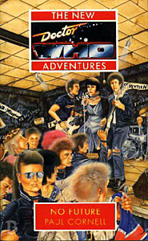

|
No Future
|
BASIC PLOT DOCTOR COMPANIONS The 1970s UNIT crew are all here: the Brigadier, Benton, Yates. Action, we are reliably informed, is by HAVOC. MATERIALISATION CIRCUIT Pg 210 In the Monkless version of the adventure, the TARDIS lands on the Moon. By Pg 236, the Doctor's TARDIS has materialized above the Earth. Pg 267 At the Glastonbury Festival, 1993, after a brief trip to Varda. PREPARATORY READING CONTINUITY REFERENCES Pg 2 "He hadn't seen the creatures in six years, not since 1970." Paul Cornell has a crack at making UNIT continuity work, and does a pretty good job. Here he dates The Invasion to 1970. (This means, incidentally, that Hamlet Macbeth had already been removed from UNIT at this point, and his sole experience of alien phenomena was The Web of Fear - see also The Left-Handed Hummingbird.) "The buggers are probably down in the sewers again." He refers to the Cybermen, as they were sewer-dwelling in both The Invasion and Attack of the Cybermen. "They all knew what the wheezing, groaning sound signified." It's the TARDIS, of course, as described lovingly and so very often by Terrance Dicks in his novelisations. "'Doctor! I see you've regenerated again!'" Indeed he has. Three times. "The Brigadier was about to speak, but Ace interrupted, her eyes fixed on the screen, 'Six armoured, close group. Cybermen...' The last word was said with a little upward curl of the lip, like the creatures reminded her of something funny. Something long ago." Ace may well be laughing at how comically easy the Cybermen were to defeat last time she met them, in Silver Nemesis. Or possibly the fact that she was once so afraid of them. "For Gods's sake, I used to take those things out without ordinance." Indeed she did. Silver Nemesis again. Pg 5 All the above is a simulation. Here we get the Monk and Artemis the Chronovore, from the last four books and, respectively, The Time Meddler and The Dalek Masterplan, The Time Monster. "They didn't understand that you could enjoy explosions and violence and murder and still be sane. The woman in the red dress was standing at the end of the her bed. She pointed at Ace. And she was laughing." And so was I. possibly the worst line Ace has ever thought is followed by a reference to her dreams about the woman in the red dress, as introduced in Conundrum. Pg 6 "Recently the Doctor's craft, the TARDIS, had been plunged into a series of adventures in bizarre parallel worlds, where nothing was what it seemed. It had come over almost as an ordeal, some kind of sadistic test." Yep. Correct on all counts. The previous four books. Pg 7 "'Solid. No ventilation ducts. No passages. No escape.' He lowered the hand. 'And why should there be? I'm not writing it this time...'" This is a reference to the way the Doctor behaves when written by Cornell, leaving notes for himself, but not this time. Very self aware. This also may reference the Radio Times comment on Paradise Towers Episode Four, which simply read something along the lines of 'No ball games. No running. No escape.' Pg 8 The Doctor is captured at the UNIT offices in Kensington. This is consitent with the series, which has UNIT premises all over everywhere. The Kensington offices are not the UNIT buildings at Whitehall where the Third Doctor first worked, as confirmed in Blood Heat. "'This organization seems to have changed in the last six months, or the last few years, depending on how you look at it.'" It's been six months since Terror of the Zygons, but for the Doctor it's been a fair long while. Or, alternatively, this is a comment from the narrator on the vagaries of UNIT dating. Pg 9 "A doctor John Smith was put on the payroll five years ago, and seems to have been active in the Big Bug era as they call it here. Is that you? He didn't cash a lot of his pay cheques. He was involved in the death of some psychic guy..." Five years ago dates Spearhead from Space as 1971. The Doctor claimed then that he didn't want paying, thus explaining his pay cheques (although he does cash some of them, as we found out in Verdigris). The death of a psychic guy was Clegg in Planet of the Spiders. "That's in Scotland, Tulloch Moor. Or in Whitehall. The Zygons." Terror of the Zygons, the last time the Doctor was involved with UNIT, about six months ago seemingly. Pg 10 "The Master's dead. I killed him." Paul Cornell put this line in because he knew there was an upcoming Master story (First Frontier), reasoning that since the Master hadn't popped up in some time the Doctor would assume he was dead. It's broadly consistent with the end of Survival. The Brigadier is 46 in 1976, meaning he was born in 1930, was 47/54 in Mawdryn Undead and around 63 in Battlefield. This roughly squares with everything else we know. Except UNIT dating. And Deadly Reunion, where he was 21 just after World War II. "The Autons, the Axons... Omega. Tell them who I am, Brigadier." Spearhead from Space and Terror of the Autons, The Claws of Axos, The Three Doctors. Pg 11 "Her jacket hid the body armour she'd taken to wearing." Ace's wearing of her body armour is part of a long-running feud which reaches its climax during the Alternate Universe arc, and is referenced in both The Left-Handed Hummingbird and Conundrum. "She thought she'd been told secrets, and the first thing she'd done with them was to go straight to the Doctor." This happened in Conundrum and, despite what Ace may think, was probably for the best. Pg 12 "In a different universe, the Silurians took over the world. And that universe was unstable, it wouldn't have lasted. So, with a bit of delay to allow Benny and Ace their finer feelings, he'd switched it off." Blood Heat. Pgs 12-13 "Ace said that was rubbish. Natural alternatives did spring up from time to time, places like Morgaine's continuum, and of course Ace would love to be living in one of them." Battlefield. Presumably what is meant by this latter is a universe where Jan did not die. Pg 13 Reference to Morka and the murder of the Third Doctor (Blood Heat) and the Garvond (The Dimension Riders). "He'd tried to right the world enough times, to be Time's Champion. Plotting, putting a mattress where he was going to fall. He'd felt his handwriting stretching across the universe." This is particularly the case in Love and War and Timewyrm: Revelation. The definition of 'Time's Champion' seems to be 'someone who cheats'. "Suddenly he was an extra again, blundering into the scenery in someone else's script. He hadn't felt like that since his trial, since he saw what he was going to become and decided to stop it." This refers to The Trial of a Time Lord and the NA concept that the Doctor deliberately killed his sixth incarnation, something that was not resolved until The Room with No Doors. "The flower expanded in his mind once more, and he felt his scalp, remembering the feathers. Huitzilin had seemed designed to punish him. [...] Twenty thousand hearts. Run to the temple and shout for them to stop. Sing for me. [...] It was as if the Left-Handed Hummingbird was still laughing at him." Pretty much a summary of all the emotional highs of The Left-Handed Hummingbird. "The healer becomes the warrior." A key phrase in The Left-Handed Hummingbird that will have relevance here later. Reference to Daleks, Cybermen and the Master. "Ace had stabbed him, tried to stab him through one of his hearts." The Left-Handed Hummingbird. Pg 14 "And then the Land of Fiction, the most terrible and wonderful place, the place with no law to stop the monsters." Conundrum. "At least Benny hadn't left him then, as he thought she might." She was considering it from Blood Heat, but decided against in Conundrum. "Earth, as the Master of the Land of Fiction knew it, was a place occupied by alien invaders. That had happened in 1976. Which was why he came here." The Doctor learned about this in Conundrum, but see Continuity Cock-Ups. Pg 15 "'Leave it out, the closest you've got to a Dalek is a casing in the training unit. You zap any Zygons?'" Day of the Daleks, Terror of the Zygons. Pg 18 "Benny smoothed back her fringe with one hand. Her hair was wet with exertion. There were times when she regretted getting rid of her dreadlocks." She had these in Shadowmind and Lucifer Rising. Pg 20 Bernice and Ace: "'I'll just walk away and leave you here.' 'Yeah, like that's an experience I'm not used to.' 'Does everything we do have to come back to that?'" Probably a reference to the end of Love and War. Robert Bertram's record label is called 'Priory'. Now, hold on: I think that might just be a clue. Pg 23 Mention of Maire from Love and War. Pg 24 "When she had first arrived in this era, a week ago, she'd almost expected to meet Harold Wilson, George Best and Madonna in the street. In that respect, she'd probably have been better off staying in the Land of Fiction." Reference to Conundrum. Also see Continuity Cock-Ups. Pg 27 "A Broadsword unit is doing... whatever weird stuff those guys do." Broadsword was a fanzine that published the Preludes to the NAs when Doctor Who Magazine stopped doing them, among other things. It still exists on the web at www.broadsword.org. It was named after this line. Pg 28 is a discussion that somehow you think the Doctor and Benny have already had. It references the Silurians (Blood Heat), the Guardians (The Key to Time series and the Black Guardian trilogy), the Land of Fiction (Conundrum) and the Gods of Ragnarok (The Greatest Show in the Galaxy). See also Continuity Cock-Ups. Pg 29 "'It's like being in panto, being a punk. Except nobody spat when I was in Cinderella.' 'You were? Which part?' 'Principal Boy, of course. I can still slap my thigh with some style.' Cornell's books always seem to have some mention of panto in them, prefiguring its more protracted appearance in Oh No It Isn't!. "That makes me worry about not existing, about having been killed before I met him." The Doctor was also already dead in Blood Heat. Pg 30 "The Master of the Land of Fiction told me that he [Danny Pain] features in the fiction of the invaded world. He's going to be a hero." In Conundrum. Big Ben: "The clockface erupted. Shards of glass sprayed out in a blast of heat that threw the Doctor and Benny flat." Gosh, no one likes Big Ben much. Watch out for it being destroyed in Aliens of London and nearly so in The Clockwise Man. "Better than last time she'd seen the city anyway. Then it'd been half underwater and covered in jungle. Maybe that had been an improvement." Morose Ace is recollecting her trip to London during Blood Heat. And see Continuity Cock-Ups. Pg 31 "She thought about something else, suddenly. Something about owls." Cornell uses owls as symbolism throughout his books. Here Ace may be remembering the owls she saw in Timewyrm: Revelation or Love and War, or may be remembering something else from her dream, which, later, turns out to have possibly involved owls. Pg 32 "Stevens, who'd been with the Brigadier since the Wenley Moor crisis, had volunteered." The Wenley Moor crisis was The Silurians. Pg 34 Ace doesn't get laid: "'Damn...' she murmured, 'first Alan, now him. I must be getting old.'" She failed to shag Alan in Blood Heat. Pg 38 Ace and Danny both dream of the Chronovore, here represented as the goddess, a kind of futuristic religion that has appeared in Love and War and that both Roz Forrester and Chris Cwej would later claim to follow. (Or, at least, Roz would say 'Goddess' a lot.) Pg 39 "'I sewed on every sequin.' The Doctor looked up. 'There aren't any.' 'Just as well, I'm terrible at sequins.'" Years later, Benny in Beyond the Sun: "'We are going to die,' she whispered to herself. But at least we are going to do it in sequins." (Pg 149). "God, I look like a panda that's taken up prostitution. Punkerella, you shall go to the ball." This is a reference to an episode of The Goodies. He was dying to write Oh No It Isn't!, wasn't he? Pg 42 "Compact Disc, we're calling it." Cornell is taking his role as master of UNIT dating very seriously. As this book and the Discontinuity Guide ratchet the UNIT dating backwards in order to accommodate Mawdryn Undead, Cornell's plot allows him to deliberately modernize technology early to explain away the more modern technology of the Pertwee era. It smacks of desperation, but it kind of works. Pg 44 "Not much anarchy here though, if the Doctor remembered rightly. Only new businesses that a decade later would be clawing and scraping, just like the larger fleas they were trying to shake off. An alien invasion would save them from each other, at least." The Tenth Planet (1986). Pg 45 Claire thinks through the creation of the Broadsword Unit and her training in Buddhist techniques with the Brigadier. Hang on, her what? Yes, the Brigadier is now a Buddhist, which, while being one of Cornell's more 'interesting' ideas, does accurately reflect a lot of the thought processes of the Pertwee era, particularly Planet of the Spiders. Presumably the Brig forgets his new-found beliefs and practices when the Doctor rewrites his memories or when he has his nervous breakdown in Mawdryn Undead, as they are never mentioned again. Pg 47 I know very little of pop culture of the 1970s, but I think we are supposed to recognize the man and woman arguing that the Doctor runs into. I'm pretty certain that the references to Bernie and Vivienne refer to Bernie Rhodes and Vivienne Westwood, but I am more than prepared to be contradicted on this. Pg 48 "'So, d'you know the Doctor?' 'I must admit, I do. We met two or three times. He was in his first incarnation then, very hard to deal with.' 'Nah, I met him, he's sweet.'" The Time Meddler, The Dalek Masterplan and Cornell puts in an 'or three' so that someone can write an MA if they want to. How very considerate. Ace met the First Doctor in Timewyrm: Revelation. There's something quite pleasing about the contrast between the Monk, who meddles and the Doctor, who, erm, meddles. Pg 49 "The medium used to be a bit more than the message, but now the two are the same thing. Frightening, isn't it?" This is symbolic, naturally, of the Vardans and their methods of travel and control. There are many other examples of this sort of resonance throughout the novel. Pg 51 "'Well, because I was one of the clergy once, a long time ago. I was very devout, yes, I kept up every article of my faith, was up in the monastery at all hours doing rituals.' 'You were a monk? What happened, did you get tempted?' 'No, almost exactly the opposite. I learnt of other worlds, worlds where everything I knew was meaningless.'" Mortimus' origins here don't square with either his behaviour in The Time Meddler, or what we know of his origins from Divided Loyalties, but this is all part of his spiel to Ace, so it's more than probable that he's lying through his teeth. 'Forgive me, but I doubt it. I was marooned on an ice planet-' Ace bellowed a laugh. 'Me too.' In the Monk's case, this was at the end of The Dalek Masterplan, in Ace's, before Dragonfire. But see Continuity Cock-Ups for one of the all-time greats. Pg 53 "'Remember,' he told the Doctor. 'Under the pavements, there's a beach.'" Actually there's sewage and Cybermen. See The Invasion. Pg 54 "Tonight on BBC 3" This channel exists in the 1970s in Who, it having featured in The Daemons. It exists now in the real world, and you can catch repeats of the new series on it, as well as Doctor Who Confidential. "This evening on BBC1, Professor X faces a sticky situation -" Professor X is the Who Universe equivalent of Doctor Who. Something close to this announcement was actually said by a BBC continuity announcer on a trailer for episode two of The Happiness Patrol ('Doctor Who's sticky situation with the Kandyman continues.') Pg 55 Mention of Jan from Love and War, and not the last mention he's going to get here. Pg 56 Benton on the Brigadier: "But in the last couple of weeks he's just become distant and really officious. He's enforcing the whole rulebook, right down to dress standards, which we used not to worry about that much." You're telling me. This is to excuse, presumably, some very lax soldiership in the Pertwee era. Pg 58 "The Doctor frowned and hit a few more buttons. A graphic of a shield appeared, and the beam bounced off it." The graphics sound very like the ones we saw in The Five Doctors, top-of-the-range stuff as provided by a BBC Micro. Pg 60 Ace's dream features her becoming Death's Champion (although this later turns out to be the Monk, possibly) and Jan being destroyed by the Hoothi from Love and War. The Doctor is Time's Champion throughout a good number of the NAs, particularly those by Paul Cornell. Ace will eventually become what is referred to as Time's Vigilante (Set Piece, Lungbarrow). Pg 61 "That's something we know from people like Hank Macbeth... and, I suppose, from people like me." Mike X mentions Hamlet Macbeth, from The Left-Handed Hummingbird. Pg 62 "'Certainly, your... your... yes, indeed, immediately. Here we are.' He presented a metal tray, on which were laid out notes and letters, all in the same handwriting. 'The Doctor's warnings to himself. I'd know the hand anywhere.' 'Yes...' a gloved hand reached out to take a letter. 'So would we.'" The Vardans know the Doctor's handwriting from the contract he signed in The Invasion of Time. The Doctor leaving notes for himself ill-advisedly began in Battlefield and continued to ludicrous extremes in Timewyrm: Revelation. This, if possible, is more ludicrous. Since the Doctor never found any notes to himself, why on Earth would he go back and leave them just simply for them to be removed? We must therefore believe that the adventure happened twice, and the Monk is changing it as it goes along, thanks to his pet Chronovore. Although Pg 199 pretty much justifies it, it's still stretching belief almost to breaking point. Pg 65 More Jan. Pg 66 "The Dinosaur Effect, we call it. Loads of civilians saw those things in London, but the only people who still talk about it are the underground press." So-called, presumably, after Invasion of the Dinosaurs. The underground press is pretty much equated to Who Fanzines throughout. Pg 67 Mention of Cybermen and 'Greys', the archetypal alien made famous in UFO sightings and alleged abductions throughout history, and crystallized in The X-Files. Similar looking aliens later appear in First Frontier and The Devil Goblins from Neptune. "It was his old temporal disruption monitor, something that he'd perfected after the Timewyrm business and hidden away in a storeroom somewhere." Now wouldn't that have been useful over the last four books? The Timewyrm business ended in Timewyrm: Revelation. Pg 74 "Mortimus activated a remote control, and the picture on the television changed to a swirling vortex. 'Places known to the CIA. Places of the mind.' 'The CIA?' 'There's no such thing as coincidence. They've been a front for us for years.'" This implies that the Earth CIA is a front for the Gallifreyan one, and that the Monk is or was working for them. This would be further explored in books such as The Devil Goblins from Neptune, The King of Terror and Escape Velocity. Pg 207 shows that the Monk worked for them before becoming the titular Time Meddler, which doesn't quite square with Divided Loyalties, but that's the latter book's fault, not this one's. Pg 77 Shirley Williams is Prime Minister. Terror of the Zygons stated that the Prime Minister was a woman. The Discontinuity Guide (Pgs 154-155) speculates that this is indeed her identity. Pg 79 "Mr Bertram is to be UNIT UK's new scientific adviser." The Monk continues to take over from the Doctor. In later years, this role would fall to Iris Wildthyme. "'So can I have your autograph? It's not for me, it's for my grand-daughter.'" I'm sure Susan would have loved Plasticine, given her musical tastes in An Unearthly Child. Pg 80 "'No, but when you're looking for a needle in a haystack, it's easy to clutch at straws.' 'At least the metaphors are improving.'" Back in Time and the Rani and Paradise Towers, the Doctor showed a propensity for mixed metaphors and muddled proverbs. Thankfully, he soon grew out of it. Pg 83 "'How can the same race produce Michaelangelo's David and Belsen? Guernica and the air raid that inspired it?'" The Doctor would find out about the latter eventually, but by then he will have forgotten that he ever asked the question (History 101). Reference to Daleks and the Doctor's identity as Time's Champion. Pg 99 "'The last time I saw you was in an alternate world, and you weren't yourself there, either.' 'What, you mean like that chap with the eyepatch? I still remember that rather witty story you told me about him -'" Blood Heat. The Brigadier is about to launch into Nicholas Courtney's oft-told tale of how he 'turned around and they were all wearing eyepatches.' Fortunately, the Doctor, who has presumably heard it before, stops him. Pg 100 Reference to Terror of the Zygons ("'that Zygon business'"). Pg 102 "'In the meantime, Brigadier, do you remember a UNIT lieutenant called Macbeth?' 'What, Hamlet Macbeth? Ah, yes. Left in sixty-eight. Managed to muck up the Paranormal Division. Compiled a rather stinging dossier on you -'" The Left-Handed Hummingbird. Strangely, the Brigadier does not go on to say, 'Actually, that was around the time this girl called Ace rang me up about you. What was all that about, Doctor?' (Also The Left-Handed Hummingbird) God alone knows what Ace actually said to the Brigadier if she managed not to bring the Doctor's name into it. Pg 103 "The Doctor complaining of his imprisonment in a UNIT safe-house on his last visit to Earth." The Left-Handed Hummingbird again. Pg 104 "'No, no! I quite enjoy the way humans bicker, you know, I do like a chat. And their conflicts! Goodness, nobody else fights quite the way they do, as various members of my race have observed.'" Predominantly, the War Chief, in The War Games. The Monk goes on to talk about his 'career with the Capitol,' which is referenced again later (Pg 207). Pg 105 "'Besides, they [the Vardans]'ll be dislodged by the Dalek invasion of Earth in a few decades.'" The Dalek Invasion of Earth, shockingly enough. Pg 106 Jan gets another namecheck, as does the Land of Fiction (Love and War and Conundrum). Pg 107 The Brigadier and the Doctor: "'I must say, I'd have thought that with all your good karma you'd have given up on the reincarnations and achieved nirvana by now.' 'Well you know how it is. I've turned down enlightenment before.'" In Enlightenment. Pg 108 Mention of Harry Sullivan and Sarah Jane Smith. And then more owls. The Chapter entitled 'Intertextuality' (Pgs 117-128) reminds us all that Cornell was also co-author of The Guinness Book of Classic British TV. There are more references to 1970s popular culture in these few pages that you can shake a stick at. I've probably missed some of them. Pg 117 Dad's Army. The Doctor and Bernice: "'Tell me, is this an alien mind-control sort of situation?' 'Yes.' 'Glad it's something that I'm used to, at least. I'll really miss being controlled by aliens when I leave your company.' 'When's that?' He was looking at her urgently. 'Not for a long time. Don't worry.' Bernice's first trip with the Doctor led her to being immediately taken over by an alien entity (Transit), and it has happened on occasion since. Bernice made up her mind to stay with the Doctor during Conundrum, but he's still touchy on the subject. When she says, 'not for a long time,' she means it: The Doctor leaves the NAs before Bernice does! Pg 118 The Goodies. "'Wonderful?' Graeme quickly hid his package behind a chair. 'You don't know what he looks like! Under that lot he could be a... well, a roast chicken.'" Which is suspiciously similar to what the Ergon looked like in Arc of Infinity. Pg 120 The Good Life. "'The Mediasphere.' The Doctor looked about him cautiously. 'Time Lord intelligence thinks that it's a development of the technology used in manipulating the Land of Fiction.'" The Mind Robber, Conundrum. Pg 121 "'There was somebody who wrote a lot about this kind of stuff in the late-twentieth century. She said that watching television was really bad for you. She must have been one of these anarchists. What was her name? Mary -'" Whitehouse, it turns out, bitter critic of violence in Doctor Who and head of the National Viewers and Listeners Association. Also recipient of a gleeful entry in the Completely Useless Encyclopedia. She is not an anarchist. Pg 122 Mention of Love Thy Neighbour. I'm not sure who Mike and John and the big globe are (should've watched more TV). Daibhid Chenedelh adds: This is a reference to The Tomorrow People, ITV's answer to Doctor Who that made you wonder what they thought the question was. The bit about Mike wanting to join a band is a very silly joke, based on the fact the actor who played Mike was indeed in a band. Pg 123 Alf Garnet, from Till Death Do Us Part Pg 124 The Doctor has a moment worrying about the fact that the Brigadier hasn't met him in Battlefield. Not to worry, he'll sort that later. "'No, time doesn't work like that. She's ferociously neat, she -' 'She?' 'Time.' 'Are you two going out or what?' The Doctor frowned. 'Once. But now she's seeing somebody else.'" This is presumably a reference to the Time's Champion thing, and 'seeing someone else' is the Doctor's frustration over the lack of notes at the moment. Or he might be referring to Ace. Frankie Howerd in Up Pompeii... Pg 125 ... but he's playing the role of Professor X, the Who Universe's equivalent of Doctor Who, travelling in his TASID. Confused? You will be. Pg 126 Professor X: "'I was never happy with my slot, you see. Caught between Basil Brush and Bruce Forsyth.' 'It could be worse,' the Doctor told him." This takes self-awareness to whole new levels. The Sixth Doctor followed Roland Rat on BBC on Saturdays, not exactly auspicious. The Seventh Doctor, meanwhile, was condemned to appear opposite Coronation Street. The Doctor was also self-aware at the end of Conundrum. Pg 127 "'The aliens may have dealt with higher powers to gain this technology. The Eternals meddle. Time and Death especially. Or perhaps this is down to the Gods Of Ragnarok.'" We've seen lots of Time and Death. Those selfsame Gods from The Greatest Show in the Galaxy. Pgs 127-128 "'We remember,' blazed the shape. 'We remember how your people time-looped our homeworld, shut us in a chronic hysteresis.'" The Invasion of Time. The Doctor and Romana were briefly trapped in a chronic hysteresis in Meglos. It's also the technical term for the 'howlround' procedure used to create the first theme sequence. Pg 130 "Trap Two to all traps. Move in, repeat, move in." The Greyhound and Trap callsigns are accurate to the later UNIT stories in the Pertwee era. Later, when the Brigadier is under cover, he uses 'Bloodhound'. Pgs 131-132 "'The Vardans?' Benny frowned. 'I think you'll find that your enemies tremble with mirth and cry out things like "Oh good, it's only the Vardans, thank goodness it wasn't somebody serious like the Daleks". You are, after all, the only race in history to be outwitted by the intellectual might of the Sontarans.'" Mention of Daleks and Sontarans, obviously, and she's referring to The Invasion of Time. How on Earth Bernice knows about this is not clear, but I don't care because it's a great line. Presumably the Doctor has been regaling her with tales of earlier adventures at some point. Pg 132 The Doctor refers to himself as the Ka Faraq Gatri, which is Dalek for 'Bringer of Darkness/Destroyer of Worlds'. This name was invented by Ben Aaronovitch in his novelisation of Remembrance of the Daleks. Pg 133 "Ma'am, I realize that the Brigadier was a great friend of your predecessor." Indeed - the Prime Minister and the Brigadier were on first name terms in The Green Death. "'We have reference to an extraterrestrial involved with the Brigadier from as far back as the sixties.'" The Web of Fear, possibly The Invasion (dated 1970 in this book). Pg 134 "Bertram leaned closer. 'Insurrection and terror are recognized opening tactics for alien invasions. The Autons, for example, or the Yeti.'" Spearhead from Space, Terror of the Autons, The Web of Fear. Pg 135 "And so we face the final curtain. Askescharr, Olympus Mons, Harcalkas." Olympus Mons was one of the Transit stations in Transit. The Ace that the Doctor downloads into Benny's head is the Ace from Timewyrm: Genesys, which is the only point where we know the Doctor took a copy of her memories. Her behaviour is consistent with that time-frame. Pg 138 "They tried to invade my homeworld, Gallifrey, once." The Invasion of Time. Pg 140 "'Jamie introduced me to this kid actor who was in some children's TV show. Gary, his name was. Now he was young and beautiful, he wore a leather jacket. He was sixteen playing fourteen.'" This may well be Gary Russell, occasional Who author and audio commander-in-chief, who played one of the Famous Five in the ITV adaptation of the Enid Blyton books. I've no idea whether he was beautiful. See also Conundrum. Pg 142 "'Well, that's partly down to you, Doctor,' Doyle grinned. 'You're quite a hero to our lot.' 'What?' The Brigadier frowned. 'How?' 'Through the underground press. Fanzines, whole books. We like to keep alive the stories of alien invasions that you lot try to hush up. And your man here's always on the side of the rebels. He's the purest sort of anarchist.'" This is a reference to Who fandom and, to a certain extent, the NAs themselves. The 'your lot try to hush up' bit may well be a barbed reference to the BBC cancelling the programme. Years later we would find out that there were loads of Doctor Who books around - see The Gallifrey Chronicles. The Brigadier's response to the idea of the Doctor as an anarchist is actually quite nice. Pg 150 "There was the distant sun of Iceworld, and there was Skaro's home star, still twinkling now in the seventies, back before he snuffed it out. He'd killed a star. The Doctor shook his head. How far had he come to even contemplate that? " Dragonfire, Remembrance of the Daleks. A number of the NAs tried to distance the Doctor from his own actions in Remembrance of the Daleks. Pg 151 Mention of Romana and a punting trip, which may have been around the time of Shada. "The Death Card, the Ace or Queen? And wasn't he the Hanged Man, dangling by his umbrella from some precipice?" The Doctor is represented as the Hanged Man in Timewyrm: Revelation and Camera Obscura, amongst other places. The dangling from a precipice by his umbrella occurred at the end of Episode One of Dragonfire, but also references The Greatest Show in the Galaxy. Pg 165 "'The old wound,' he gasped through clenched teeth. 'Have you... killed me?'" The old wound is where Ace stabbed him before in The Left-Handed Hummingbird. Pg 166 "The Monk connected a few plugs and slotted a cassette into a machine. 'Torture?' asked the Doctor. 'Of a sort.' The Monk grinned. On the screen appeared a grainy image of the Doctor as he once was, a white-haired dandy. He was battling a minotaur creature, leaping away from it with graceful bounds." Indeed - it would be torture to have to watch The Time Monster again and again. The Monk, it turns out, has built up quite an enviable collection of Who videos (although not DVDs, despite him having brought the CD revolution along ten years too early). "I have visual records of all of your adventures... well, nearly all. There are some that I have yet to recover." This is a reference to the Hartnell and Troughton stories missing from the BBC archives. "The picture switched to the Yorkshire coast, to the Doctor moving a single piece on a chessboard." The Curse of Fenric. "You leave notes for yourself, place advertisements that you'll know you'll see." Timewyrm: Revelation is the worst offender on this count. "'Got tired of putting me on trial.'" The War Games, The Trial of a Time Lord. "Or would they only try one of their own? Some of the things you do, Doctor... aren't they a tiny bit beyond what a rogue Time Lord could achieve?" This ties into Silver Nemesis' assertion that the Doctor was 'more than just a mere Time Lord.' This is, kind of, resolved in Lungbarrow. Another reference to Varda being time-looped (The Invasion of Time). Pg 167 "I used it to kill you, in an earlier incarnation of yours. Quite crude. I should have known that doing that would only create an unstable mini-universe." Blood Heat. "'You're starting to become what you fight. You've stared too long into the void, Doctor. Has the healer really become the warrior?'" Reference to two quotations from The Left-Handed Hummingbird. "'Some things... must be beaten. You... must be beaten.'" A deliberate misquoting of the Doctor's words from The Moonbase. In the first instance way back when, it was that 'these things must be fought,' with no necessary assumption of winning. Now, it would seem, the winning is all. "I'd read about the Garvond in the Red Book of Gallifrey." Is everything on Gallifrey colour-coded? We had the Black Scrolls in the Five Doctors. The Garvond is from The Dimension Riders. "That Aztec creature, for instance. Huitzilin. Beautiful thing, I thought." The Left-Handed Hummingbird. Pg 168 "'Finally,' the Monk continued, 'I needed you out of the way for a bit while I removed all your future notes and escape clauses. Hence the Land of Fiction.'" Conundrum. There's another reference to the Gods of Ragnarok as well (The Greatest Show in the Galaxy). Pg 169 The Monk and the Doctor: "'You enjoy being a big fish in a very small pond. I enjoy being a citizen of the whole universe.' 'But not a gentleman.'" This references the First Doctor's comment that he is 'a citizen of the universe and a gentleman to boot' in The Dalek Masterplan. Pg 171 "'The Doctor...' And then, seeing the way the Brigadier had fixed his calm smile on her, she changed what she was going to say. 'What would he do?' 'Win,' Yates muttered." Indeed. According to The Gallifrey Chronicles, the Doctor never loses. Pg 180 Benny: "That planet's about to be invaded. Feels odd to be stuck here, really. This is just what the situation was like when I was..." Benny's planet was invaded by the Daleks when she was very young, as mentioned in Love and War. Her mother died then. Pg 181 Benny again: "Yes. My father... Oh, it's a long story. But that's what Ace is. That's what got the Doctor killed. Trusting a soldier." Benny thinks her father is dead, but see Return of the Living Dad. Pg 183 Ace: "'You'd know when, wouldn't you?' she whispered. 'Timing.'" This references Battlefield, and the Doctor's assertion about comedy and high drama. Pg 184 Reference to Chelonians (The Highest Science et al). Another reference to the events leading up to the death of Benny's mother (Love and War). Pg 185 "The Doctor had stood with her in Dresden once, as the first noise of bombers came up over the horizon." An unrecorded adventure or visit. Pg 187 "She slumped to the wall, putting her hand to her chest, the place where she'd been shot. It still ached sometimes. 'I loved you very much.'" Benny gets shot in Blood Heat, but see Continuity Cock-Ups. Pg 188 "UNIT, sir. Broadsword, sir. Saving people from monsters." The Doctor's creed, as the Brigadier finally seems to have learned. Pg 189 "The chest that Ace had been rummaging through when she found that knife caught her eye, and she opened it up. A long silver robe, and a turban. Lots of gold coins. This must have been the relic of some sort of Arabian adventure. The coins didn't ring a bell, though." I spent a moment thinking that this was an unrecorded adventure. Of course, since the knife that Ace has taken is a prop collapsing dagger, this is the Doctor's panto chest. Panto again - Oh No It Isn't!. Pg 190 "There was that other room, of course. The one that Ace had created when she restructured the TARDIS." In Blood Heat. Pg 191 The inside of the mysterious room is a recreation of Heaven, including Shepherdshay. Benny thinks about the Hoothi (Love and War). Pg 193 "Dad and Mum and Rebecca and the Doctor and all the good and beautiful stuff in the world was going to be lost to -" Benny's Dad appears in Return of the Living Dad, her mum died a long time ago. Rebecca was the name of Bernice's doll, who her mother, foolishly as it turns out, sacrificed her life for. Pg 194 The chapter title is 'Never Mind the Moroks', referring to the villains of The Space Museum. Pg 197 The Vardans discuss the Monk's credentials: "And he has some impressive credits in the past. This is the man, after all, who was technical adviser to both the Moroks and Yartek, leader of the alien Voord." This is getting silly. The Moroks are from The Space Museum, while Yartek, leader of the alien Voord is from The Keys of Marinus. He's always been referred to by that title ever since The Making of Doctor Who. The Vardans are (presumably deliberately) intensely stupid. Pg 199 "Back in the Dark Time, where none can visit." Various stories, particularly Lungbarrow, make it clear that you should not travel into Gallifrey's past. Of course, the Doctor has done. "I dare say that the elder powers - I mean people like the Daemons, the Eternals and the Gods of Ragnarok - wrote all this down." The Daemons, Time and Death etc (also the creatures from Enlightenment), The Greatest Show in the Galaxy. "Yes, using the rods. I can influence her behaviour." This, and the whole setting for this scene, explains much of the mysteries of the previous four novels. Pg 202 The Monk's story, and now it all begins to get really silly: "It had taken time for him to repair his TARDIS while stranded on the ice planet." The Dalek Masterplan. But see Continuity Cock-Ups. Pg 203 "The elder books of the Dark Time had specified their races, those that had had their genetic destinies changed by the Capitol. The blood of Minyan, Silurian, Dalek, Human and Mandrel mingled in the ice on the floor of the Monk's timecraft." Oh, God. The Dark Time was referred to in Silver Nemesis. The Minyans appeared in Underword. Silurians in The Silurians, The Scales of Injustice, Warriors from the Deep and Blood Heat (although nothing in any of them suggests that their destiny was affected by the Time Lords - presumably the arrival of the Moon, in order to allow humanity to develop, is what is being referred to here). Daleks had their destiny changed by the Doctor in Genesis of the Daleks. Humans and Gallifreyans look startlingly alike, and there is plenty rumour as to why this should be (see also Alien Bodies and Interference). Mandrels are creatures from Nightmare of Eden; quite why the Time Lords altered them - presumably so that they would boil down to the deadly narcotic Vraxoin - is unclear, unless some of the Dark Time Time Lords were drug dealers on the side. "At the corners of the pentacle stood spheres stolen from the Sisterhood of Karn." The Brain of Morbius. "He stepped out of the pentangle and took the crystal from a nearby table. It was an oddly shaped thing, a pyramidal spar." The Time Monster had such a crystal. "'Artemis!' he shouted. 'I call you! I call you in the name of Rassilon The Ravager! I call you in the name of Omega The Fallen! I call you in the name of the Other, he who completes the Trinity and whose name is forever lost!'" Rassilon from The Five Doctors and a number of books, Omega from The Three Doctors, Arc of Infinity, The Infinity Doctors and some other books, The Other is a previous version of the Doctor, possibly, first introduced by Ben Aaronovitch in his novelisation of Remembrance of the Daleks and explored in great detail in Time's Crucible and Lungbarrow. "A Time Lord. A Time Lord who has consorted with the Eternals in his time." Time and Death and so on. It appears that the Monk made a deal with Death at some point. "The Monk quickly made the sign of Rassilon." When the Doctor did this, it was the famous two-fingered salute (Timewyrm: Revelation). Pgs 203-204 The Minyan: "The pale figure of a child rose from the corner of the pentagram and spiraled around it, getting older, until, when he returned to his corner, he was an old man. There was a blaze of regeneration, and the Minyan circled again, this time as a different youth. 'He will go round thirteen times, widdershins.' The woman smiled wryly." Minyans got the power of regeneration from the Time Lords. But see Continuity Cock-Ups. Pg 204 The Mandrel: "She glanced back to the Monk as the ungainly creature vanished in a puff of Vraxoin." As they did in Nightmare of Eden. But see Continuity Cock-Ups. Again. Pg 205 "'Oh, and I agreed to be the champion of one who calls herself Death. I'm not entirely sure what that implies, but I'm sure it won't be too demanding.'" Death's Champion, as the Doctor is Time's Champion. It's all a bit naff really. The Monk captures Artemis by using the blood of an Eternal - like Death and Time - but this time called Vain Beauty. Or Brett. Pg 206 "Behind him, the interior of the globe flickered like an oncoming storm." A presumably deliberate reference to the Draconians' name for the Doctor (Love and War). Pg 208 Bernice to the Doctor: "You promised to show me puppies. I'm still waiting." Let's leave aside for a moment the fact that this sounds like something a paedophile tells a child to get it to come up to their room, and just point out that I can find no point at which the Doctor says this in Love and War, although there is some dog imagery on Bernice's part at the end of Transit. Pg 209 "'Later, Brigadier. Can I use your video?' 'Liberty hall, Doctor.'" This misquotes the Brigadier's 'Liberty hall, Doctor Tyler, Liberty hall,' from The Three Doctors. "'You go into the pit, Doctor, and you emerge as a new man.' 'Been there, done that...'" The Doctor may be referring to The Pit, but is probably talking about regeneration. Or maybe Timewyrm: Revelation. "'It's one of my adventures, as recorded by the Monk. I think you'll recognize certain elements in it.' The pattern on the screen shifted into a mass of flickering lines." Yes, they watch Doctor Who: No Future, on a video, including title sequence (a similar thing also happens in Zeta Major). Sadly, and possibly deliberately, this just made me think of a similar sequence in Spaceballs. Not necessarily a ringing endorsement. This video shows how the story would have turned out had the Monk not interfered. Get your head round the concept, though, because it was the Monk that suggested Earth as a target to the Vardans, and they wouldn't have invaded otherwise, so this version probably could never have really happened. Is that clear? Thought so. Pg 210 "Overhead was hovering an advertising balloon, with an advertisement for a new computer game: Vengeance of the Vardans." This is actually the plot for the Ninth Doctor book, Winner Takes All. And parody becomes reality. The top of Pg 211 is pretty similar to a scene in Battlefield. Parody only works if the parody is better than the original. Pg 213 The Brigadier, in Shadwell: "Lots of ops round here during that Yeti business, right down to Tooting Bec. Before your time." This references The Web of Fear and Jon Pertwee's assertion that Earth-based stories were best because it was much scarier to find a Yeti sitting in a toilet in Tooting Bec. The self-referentialism keeps reaching new levels of ludicrousness. Pg 216 "Ah. Ventilation ducts. Where would we be without them?" The old Doctor Who standby reappears, with knowing wink to the audience. Pg 217 "The Brigadier raised an eyebrow. 'Stupid boy...' he smiled." This is a Dad's Army reference. The Doctor has currently got a sonic screwdriver, presumably the same one he had in The Pit. He's lost it by Lungbarrow, because Romana then has to give him hers. Pg 218 "'Sounds to me like your young lady's defected, Doctor.' The Doctor glanced up. 'Nah, mate, I'm just pretending,' he murmured in a perfect imitation of Ace's accent." The Doctor's powers of imitation were first revealed in The Celestial Toymaker. Pg 219, as the Brigadier enters the TARDIS: "'Last time I was inside one of these things -' The Brigadier protested. 'You found yourself in Cromer. I know.'" The Three Doctors, and a reminder of one of the Brigadier's all-time lows. Pg 221 "Pike rolled with the Vardan sentry at the edge of the Reichenbach Falls, being Sherlock Holmes." As well as referencing a fairly famous piece of fiction, it is interesting to note that this was one of the intended conclusions to The Trial of a Time Lord, with the Doctor and Valeyard going over the edge of a time distortion together. It was abandoned as JNT felt that the BBC could cancel the show if that was how they finished a series. Nightshade appears further down the page (Nightshade). It's quite fitting that it is in this persona that Pike wins his battle. Pg 227 Mention of Silurian Earth from Blood Heat. Pg 228 "'Now, Brigadier, do you know how to break into the BBC?' 'Start as a teaboy and work your way up?' suggested Yates. A moment later he added: 'Sorry.'" This is how John Nathan-Turner described his career at that hallowed organization. Pg 229 "'It is a temporal baffle, a primitive early Gallifreyan device.'" It seems not at all similar to the one in 'The Book of Shadows' from Decalog. Pg 231 "The soldiers and the band crept past the Blue Peter pond. 'Hey!' whispered Danny, glancing at the fish. 'Anarchy! Anybody got a spray can?'" The Blue Peter garden was actually vandalized twice, one in a minor way in 1979 and once more seriously in November 1983 (around the broadcast date of The Five Doctors). Various people have taken credit, and fictional suggestions have included Paul Margs (in All The Rage) suggesting that it was the manager of a band and Lawrence Miles, who suggests it was the work of Faction Paradox. So there you go. "The Doctor made these last night. Apparently they're copies of one he acquired when he was a guest on Nationwide during that General Carrington business." The Ambassadors of Death. Pg 233 The BBC Producer ('I'm surprised and delighted'... 'no hanky-panky'... 'I'm sure the audience is going to stay tuned.') is clearly meant to be John Nathan-Turner. Oh, look, the theme for Bertram's Live Aid event is Panto. What an unbelievable coincidence. Oh No It Isn't! Pg 234 "'Oh yes, Miss Summerfield. We tested them on a platoon of Spetsnaz troops on the wrong side of the Berlin wall, if I recall.'" An unrecorded tale. Pg 236 "The Brigadier jumped to his feet. 'Chap with Wings, five rounds rapid.'" It's almost as if the whole plot has been built around providing the Brigadier with the opportunity to say this line. It's almost certainly the joke referred to in the achnowledgements on the first page. For the record, it was originally stated in The Daemons. "Many miles above the planet Earth, a finger flicked out and hit the play button on an old ghetto blaster." This may well be Ace's ghetto blaster that the Doctor built for her before Silver Nemesis. Pg 237 "'But the outside of the building will be under attack from hundreds of invading aliens.' The producer glanced at his crew. 'I think that I have been persuaded to stay.'" This is what John Nathan-Turner said every year when he once again took the helm at the Doctor Who production office. Allegedly, the persuasion was that the BBC wouldn't give him anything else to do. Pg 238 "It's some child from the Academy, some jealous outsider... or a Shayde." Outsiders were seen in The Invasion of Time. Shayde is a comics reference, and a Shayde also appeared in the audio No Place Like Home. "The Monk's TARDIS materialized inside the darkened console room of another such craft." The TARDIS console room was also darkened in Battlefield (in that case because most of the set had been junked by then). The Monk's TARDIS appears inside the Doctor's, without causing a gravity bubble (Logopolis), but they're in space where there is no gravity, so maybe this explains it. Pg 239 "If it's you, Magnus, if it's the gold you want -" Magnus is the real name of the War Chief from The War Games, although he is, by this point, very dead (Timewyrm: Exodus). Of course, the Monk may not know that. Pg 240 The Doctor: "This place used to be home. Used to be a place that, if you were scared, you could come back to and be safe. And you destroyed it. You lost its heart in a tar pit." Blood Heat. "You did similar things to me. How far back do we go, you and I, Mortimus? Were you influencing me when I destroyed Skaro? When I fell into my own pit? When I hurt Ace... when I hurt her so badly?" Remembrance of the Daleks, Timewyrm: Revelation. "'What punishment could be enough for the agonies you've inflicted on me? What revenge would be enough to make up for Earth, for Ace... for the children?'" 'For the children' was one of the tag-lines in Blood Heat. Pg 241 "They say history repeats itself, Mortimus. The first time as tragedy, the second time as farce. This time, it's panto." Need I say more? Oh No It Isn't! Pgs 246-247 "Alistair had once cut a rose from his garden, in a future that now would never happen, a future where Ace had been young and hopeful. He'd pinned it to the Doctor's lapel. 'What is it?' the Doctor had asked. 'Hope and Glory,' the Brigadier had told him. 'Now there'll be part of that TARDIS of yours that is forever England.'" Presumably this happened soon after the end of the Battlefield. The end of the quote reflects Bernice's comment at the end of Love and War. Pg 247 "And now Mortimus had cut him [the Brigadier] off, before he was due, denied him that late and peaceful death in bed." When the Doctor thinks the Brigadier dead in Battlefield, he shouts to the heavens that 'You were supposed to die in bed.' It turns out to be a very late and peaceful death, as the Brigadier is restored to youthfulness in Happy Endings. Pg 250 Reference to Morka killing the Third Doctor in Blood Heat. Pg 251 Jan again (Love and War). Pg 254 "'In that case... I'll be seeing you again!' The Monk shoved the Doctor aside and dived into his ship, slamming the door behind him. As the TARDIS dematerialized, above the rending and groaning of space-time, an insane, girlish laughter could be heard. As the final phantom of the craft died away, the laughter mingled with a long, agonized scream 'Probably not,' whispered the Doctor." The Monk's exit owes a lot to the departure of Grendel in The Androids of Tara: 'Next time, I will not be so lenient!' Pg 258 "'He was lonely.' The Doctor said. 'If you're left on an ice world, you get lonely. He couldn't be a dragon without his Johnny Piper.'" This is very similar to how the Doctor explains himself to Benny at the end of Love and War, although it's Jacky Piper there. It references Puff, the Magic Dragon. I'm slightly embarrassed to know this, but it should have been Jackie Paper in both cases. However, it's possible that the Doctor is getting this wrong deliberately. Pg 261 "Benny was amazed. 'So you were in panto? When?' 'UNIT staff Christmas party, 1973. Captain Yates was Widow Twankey.' The Brigadier placed a new pint of bitter in Benny's hand. 'And Jo was Aladdin.'" Oh, look, another panto reference. Oh No It Isn't! I'm betting that the Doctor was the genie. Pg 264 The Doctor on the Monk: "He never could resist stealing pennies." This may well relate to the compound interest story told in the Monk's diary in The Time Meddler. After the first hints of what may be the beginning of the Brigadier's nervous breakdown (but see Continuity Cock-Ups): "The Doctor stepped round to face his old friend, his face a picture of agonized concern. 'I'm sure he wasn't laughing at you. I'm sorry. This is my last rewrite.' He reached up and touched Lethbridge-Stewart's brow. 'Forget.'" And with one fell, swoop, most of the continuity issues are gone (although one wonders what happens the next time Benton says 'And what about the Vardans, sir?'). The Doctor will return the Brigadier's memories in Happy Endings, after the continuity issues have conveniently passed by. We are to assume that any after-effects of Ace contacting the Brigadier in The Left-Handed Hummingbird are dealt with here as well. Pgs 264-265 "'Anyway, must be going. Things to do. Planning to see Doris tonight. Might take a bit of a holiday.'" He will later marry Doris, but not for some time yet. See Battlefield. Pg 265 "Who knows, might chuck it all in and retire." Which he does. See Mawdryn Undead. "The Doctor took off his hat, and pulled a white rabbit from it." Fitting, at the end of this story. Still more believable than a UNIT pass. In the simulation of Heaven in the TARDIS, there are owls. Pg 267 Ace has finally removed her armour and shades, the end of a plot arc that has been going for some time. "A young woman off to see a band in a fractal T-shirt." There were a fair amount of fractals in Timewyrm: Revelation. Normally, I wouldn't mention this, but Cornell does work with this kind of symbolism quite often. Pg 268 The Doctor: "I thought that he'd learnt his lesson. Like I'd learnt mine. Peace. It's the only way." This is something that Ace says in Blood Heat. The Brigadier also says the exact opposite of it in Blood Heat. Pg 269 Ace: "'In Spacefleet, they taught you not to get involved. Not to make it personal. I always thought they were talking rubbish. I was sure.' Ace took a deep breath of the glorious Glastonbury air. 'Thanks for teaching me I was right.'" This is an exact reversal of her speech at the end of Blood Heat. "The Doctor turned and embraced her. They held each other for a long time. 'The warrior,' he mumbled into her shoulder, 'becomes the healer.'" And this is a reversal of one of the tag-lines from The Left-Handed Hummingbird. It's all getting laid on a bit thick right now. Pg 271 "'Very like Jan now,' Ace whispered to the Doctor. 'I was right about that, at least. There's no justice.' 'No,' the Doctor ruffled her hair. 'There's just us.' This is a Terry Pratchett misquote, normally used to refer to the character of Death. "'Really? Do you think I should go crusty?' 'Wait until your next incarnation,' Ace advised him. 'I like you the way you are.'" And what a surprise that next incarnation would turn out to be. Certainly not crusty. The TARDIS is disguised as a Tarot reader's tent, with a painting of the Hanged Man outside. This image has been associated with Doctor on and off since Timewyrm: Revelation. The Doctor continues to destroy equipment, as at the end of The Dimension Riders, but in this case, it's just the chameleon circuit. And about time too. Pg 272 "There came a strange wheezing, groaning sound, and the blue box faded from the fields of the festival." The ending quotes Terrance Dicks' description of TARDIS take-off. "The Doctor and his friends were off on another adventure." And numerous final lines from Dicks novelisations. "Long ago in an English summer." Each of Cornell's first four NAs ended with 'long ago in an English [insert season here]'. By this point, we knew that the next one, which would turn out to be Human Nature, would end in Spring. OLD FRIENDS AND OLD ENEMIES NEW FRIENDS AND NEW ENEMIES Danny Pain, real surname, Paripski. Saviour of the world. Also his bandmates Kit and Cob. Major Bryan Carpenter, a Vardan spy. He doesn't end up dead, but trapped, along with all the other Vardans. Also Captain Healing and a variety of other UNIT soldiers who have been taken over or replaced. Corporal Stevens. Corporal Claire Tennant. Paul McCartney and Wings.
CONTINUITY COCK-UPS PLUGGING THE HOLES [Fan-wank theorizing of how to fix continuity cock-ups] FEATURED ALIEN RACES A Chronovore, Artemis by name. FEATURED LOCATIONS As far as I can tell, the various pubs and clubs all exist/existed: The Chelsea Club (in Fulham), The Bear and Staff (on Leicester Square), The Prospect of Whitby (in Wapping) and The Valiant Trooper (Goodge Street). Outside London, we also travel to the UNIT HQ in Buckinghamshire, which is the one where most of the later Pertwee UNIT stories were set, and, within it, a Virtual Reality suite which mimics the Planet Varda. Also Stonehenge and a fair chunk of Salisbury Plain, including two cottages thereat. Bernice and UNIT's Broadsword unit travel on a train through Didcot to King's Cross. The Mediasphere. An Ice Planet, one careful former owner, of religious bent. Inside the TARDIS, Artemis has created a room which is a recreation of Heaven before the Hoothi came, including Shepherdshay, the Traveller's valley and the Valley of the White Horse. It's possible, but it's certainly not certain, that this would later become the Butterfly Room, as seen in the 8DAs from Vampire Science to The Shadows of Avalon. Above the Earth, adjacent to a television Satellite. In 1993, the site of the Glastonbury Festival. IN SUMMARY - Anthony Wilson |
|
 |